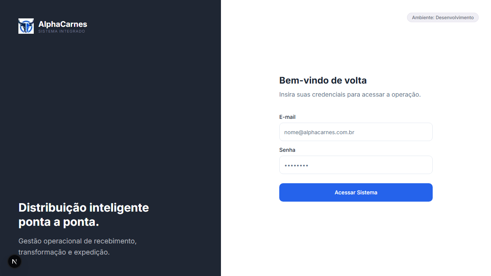
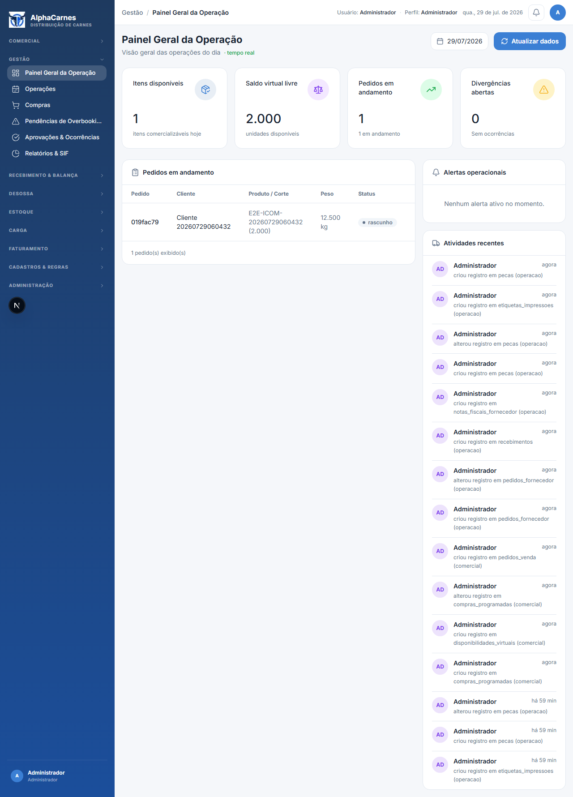
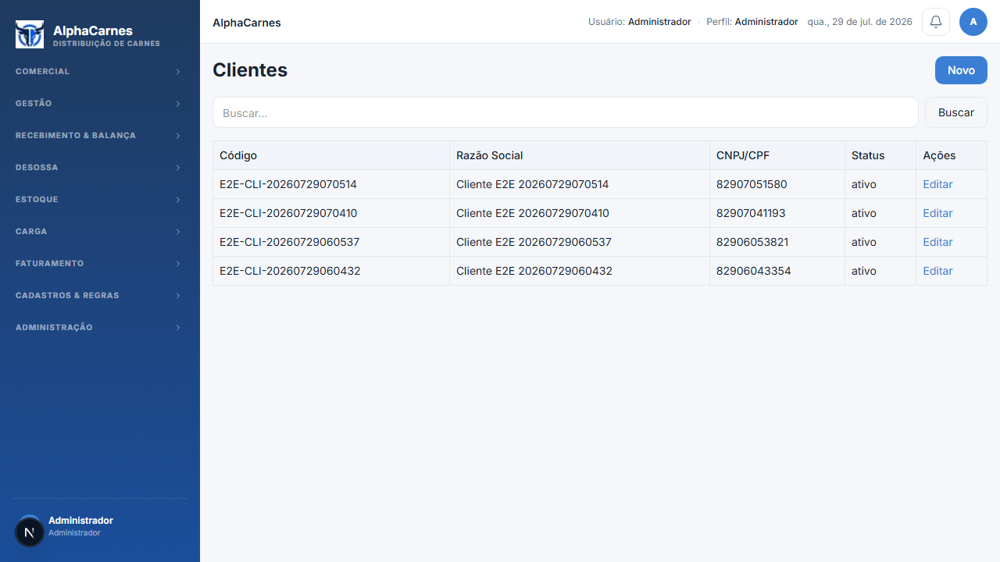
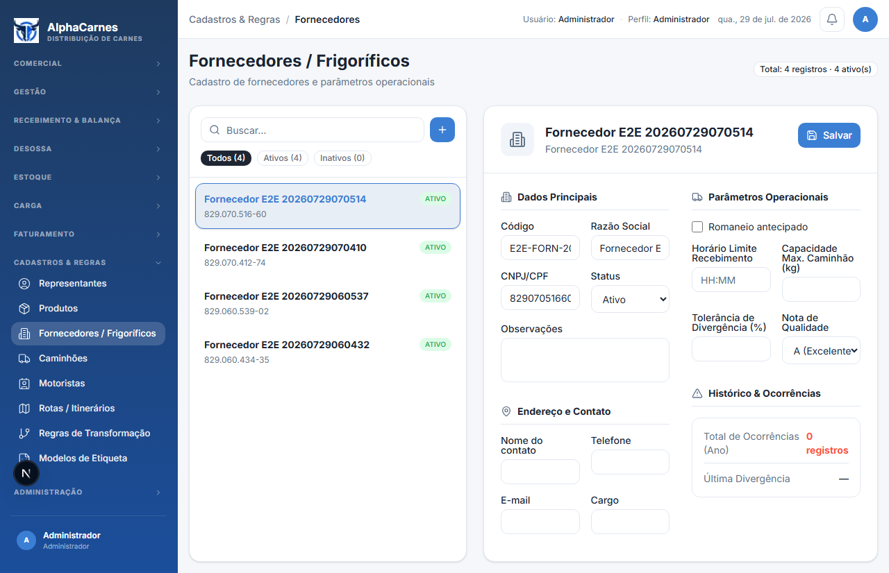
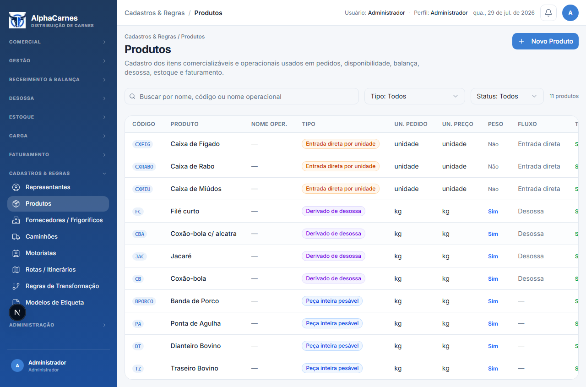
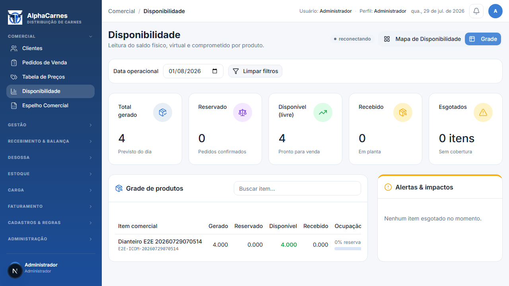
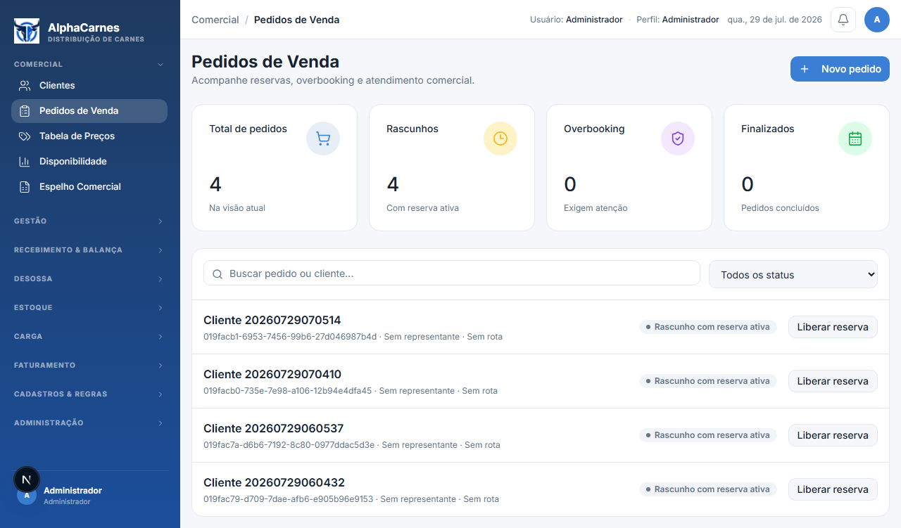
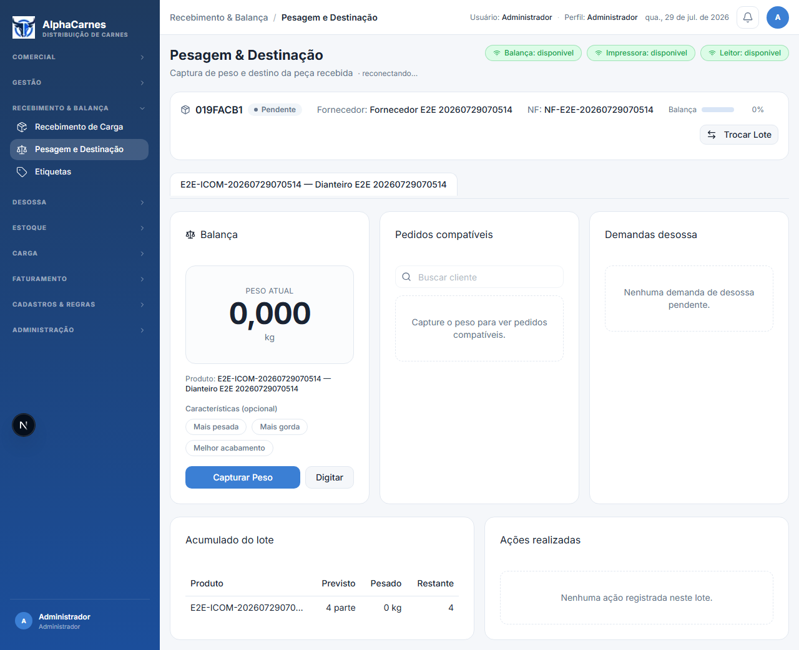
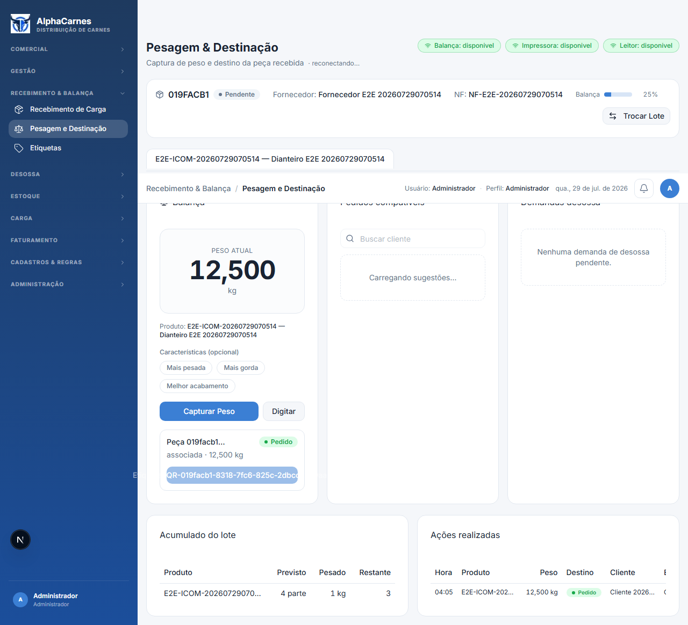
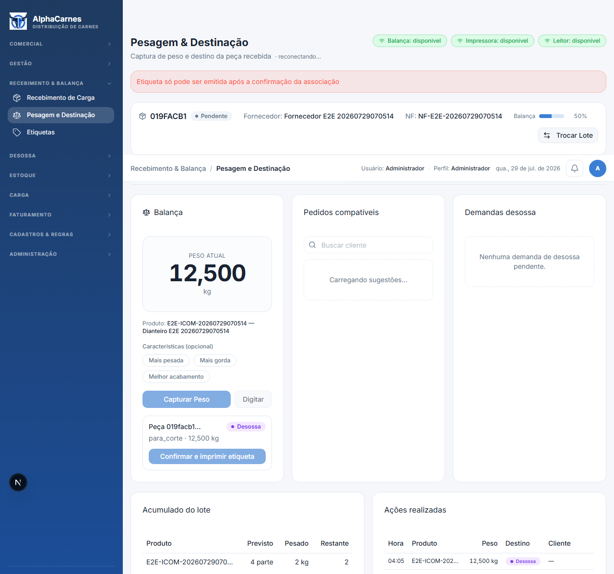

Rastreabilidade dos Dados
Limite ativo da Onda 4: para_corte
Run ID
20260729070514
Data operacional
2026-08-01
Cliente
019facb1-300f-79da-94eb-4ed76f4203b2
Fornecedor
019facb1-3bf4-7456-9336-58e2f2973bf2
Item compra
019facb1-4e7a-7ccc-8eba-b34f5ffa4c8a
Item comercial
019facb1-57a8-775b-8ac8-eb7f24e57664
Compra programada
019facb1-5c40-7aeb-a809-8c0cd64f0659
Pedido venda
019facb1-6953-7456-99b6-27d046987b4d
Recebimento
019facb1-7874-7116-9cdd-8ff0fc0f9dba
Peça carga
019facb1-8318-7fc6-825c-2dbccc239aa0
Peça no handoff
019facb1-9540-7b42-8ad2-285d244336e0
Limite ativo da Onda 4
para_corte
Limite ativo e próximos handoffs
- Onda 4 validada até o status para_corte: UI, API e evidência 11 sobre a mesma peça.
| Handoff futuro | Onda dona | Contrato futuro |
|---|---|---|
| Desossa | Onda 7 · matriz 17–19 | Painel/Modo TV, regra exclusiva parametrizada, checklist, divergência, peça mãe, etiqueta e rastreabilidade ponta a ponta. |
| Carga | Onda 9 · matriz 23–25 | Planejamento, bipagem/conferência, congelamento após fechamento e envio para faturamento. |
| Faturamento | Onda 10 · matriz 26–29 | Adapter EISS/flag RTC, Notas/XML, Seguro F6b, liberação e checklist. |
| Auditoria futura | DoD transversal das Ondas 7/9/10 | A tela /admin/auditoria pertence à Onda 3 e não prova eventos que ainda não existem; cada onda dona deve testar suas mutações críticas. |
Observações Técnicas
- Console warning: WebSocket connection to 'ws://localhost:4001/' failed: WebSocket is closed before the connection is established.
- Console error: Failed to load resource: the server responded with a status of 409 (Conflict)
01
Login
http://localhost:3100/login

02
Painel Geral da Operação
http://localhost:3100/gestao/dashboard

03
Cadastro de Clientes
http://localhost:3100/cadastros/clientes

04
Cadastro de Fornecedores
http://localhost:3100/cadastros/fornecedores

05
Cadastro de Itens de Compra
http://localhost:3100/cadastros/produtos

06
Cadastro de Itens Comerciais
http://localhost:3100/cadastros/produtos
07
Disponibilidade Comercial
http://localhost:3100/comercial/disponibilidade
Compra programada ainda não possui tela dedicada; por isso foi preparada via API autenticada.

08
Pedido de Venda
http://localhost:3100/comercial/pedidos
A UX atual ainda exige UUIDs; o relatório registra esse ponto para evolução posterior.

09
Recebimento e Balança
http://localhost:3100/recebimento/pesagem-destinacao?recebimentoId=019facb1-7874-7116-9cdd-8ff0fc0f9dba

10
Pesagem, Associação e Etiqueta
http://localhost:3100/recebimento/pesagem-destinacao?recebimentoId=019facb1-7874-7116-9cdd-8ff0fc0f9dba

11
Handoff para Desossa
http://localhost:3100/recebimento/pesagem-destinacao?recebimentoId=019facb1-7874-7116-9cdd-8ff0fc0f9dba
